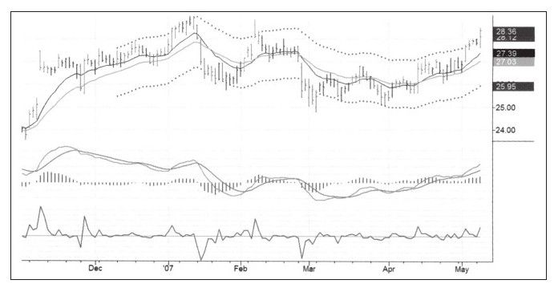
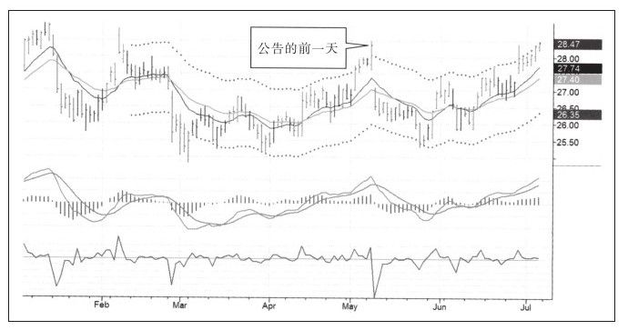
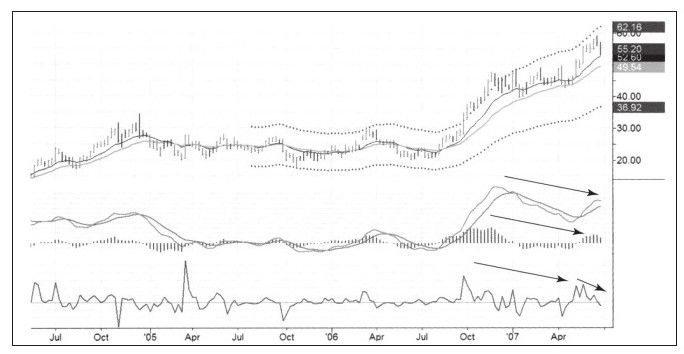
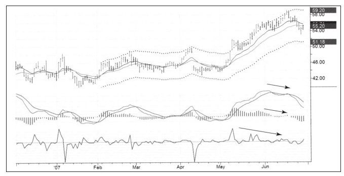
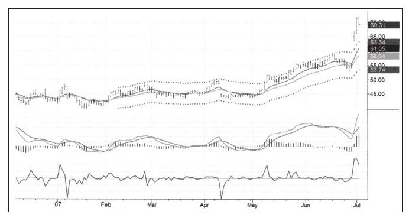

多数情况下公司的基本面信息都已经反映在股票价格之中，我对基本面型资金管理者说他们是在为我打工，他们每次买入或卖出的时候都创造出了技术分析者能够识别的模式。说到基本面分析，你至少应该知道某只股票属于哪个行业。股票和人一样都想进入好的行业，买入优势行业股同时卖出劣势行业股绝对是个好主意。
基本面信息的一个问题是，它是突然爆出来而不是“缓缓出来”的。这种情况使得股价暴涨暴跌，尤其是在公司公布业绩的时候。
对长期投资者来说，公司业绩好坏非常重要。长期投资者购买股票的出发点是愿意为公司未来的收益和分红付出多少价格，所以很多基本面分析者和交易者都密切关注公司业绩变化。
需要投资者注意的一点是，业绩报告很少给投资者带来惊喜。首先存在很多行业研究员和行业预测者，这类人中的专家对预测此类信息往往比较准确。那些付给这些研究员和预测者钱的人通常在预测报告发出前就已经买入或卖出，所以股票很少因为业绩报告盈利而大幅上涨或大幅下跌。这些专家非常了解该如何预期，价格已经反映了人们对业绩报告的期望，因此当业绩报告公布时，很少给市场带来惊喜。
另一个原因是，这些报告在发布之前往往就已经泄露了。我认为股票市场内幕交易者的交易量比大多人预想的要大得多。当美国证交会抓住了一些笨蛋并把他们定义为内幕交易时，只是触碰了冰山一角。只有那些贪婪而愚蠢的家伙被抓住了。那些在乡村俱乐部做不明显交易的机灵的内幕交易者一生都在做内幕交易。我是在交易了很多年以后才了解到这些的。有个人身兼两家上市公司的董事，他把我当成他的朋友，夸口说他们是如何在公司伙伴之间传递内幕消息的，这让我对市场的公开信息非常怀疑。新闻是为大众准备的，而内幕交易者在新闻爆出之前早已有所准备。
比利时交易者帕斯卡·威廉在谈到内幕交易的入场和出场时如是说：江山易改，本性难移，我相信内幕交易与公司经营方式有关联，这可能是公司经营的一部分。大的合同谈判会有很多人参与并持续好几周，这给信息泄露创造了机会。一家公司也不会改变其经营和管理的方式，这意味着如果这家公司过去有泄露信息的先例，那么未来泄露信息的事情还会发生。出于这个原因，我会看公司过去一年的信息并对比股价在信息发布前是否有异动。
如果我们发现公司有能力做好保密工作，那么就会继续持有交易头寸，否则无论多和空，都该在公告之前出局（见图6-9和图6-10）。因为公告消息可能已经泄露并已在市场中反映出来，所以我们只能等待盈余公告的出现。另一方面，那些非常相信自己系统的交易者是相当小心谨慎的，他们会在业绩报告发布之前了结交易。


以我的经验，怀疑公司业绩报告对股价的影响很有必要，信息泄露、内幕交易、来来回回的盈利报告这些都值得怀疑，因为一旦怀疑成立了，就可能帮你躲过大灾难。见图6-11至图6-13中RIMM的股价走势图，在业绩报告发布前发出了强烈的短期做空信号。



不诚信的存在比大多数人想象得要广泛，但诚信的公司业绩公告会给市场带来更强有力的冲击。从中我们学到的是，如果你想站在安全那边，最好在业绩报告公布之前结束交易。